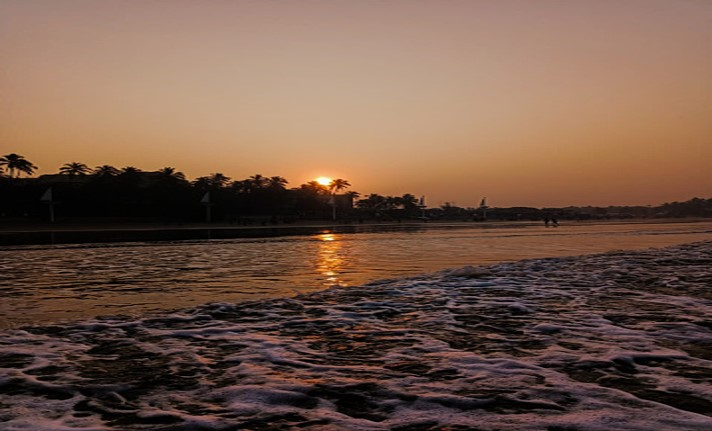
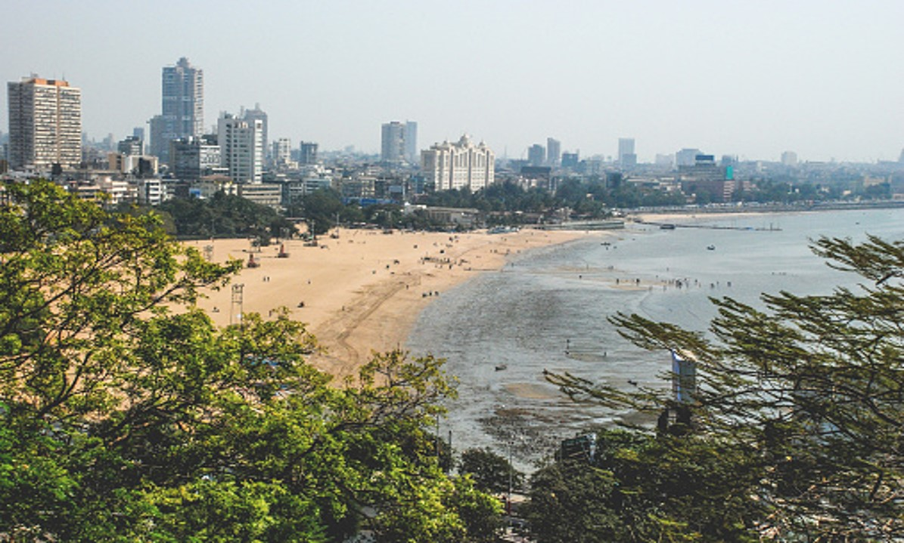
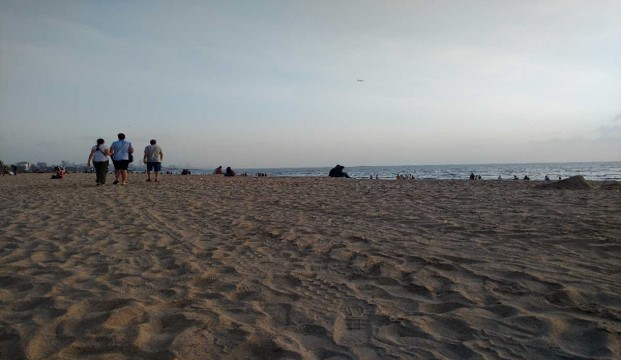

Juhu Beach is located on the shores of the Arabian Sea. It stretches for six kilometres up to Versova.The short, rocky formations make up the Juhu Beach unlike the Marina Beach in Chennai that is primarily sandy. It is a tourist attraction throughout the year and is also a sought after destination for shooting films. The beach generally gets more crowded on weekends and public holidays. The food court at its main entrance is known for its 'Mumbai style' street food, notably bhelpuri, pani puri and sev puri. Horse-pulled carriages used to offer joyrides to tourists for a small fee but have been banned now. Acrobats, dancing monkeys, cricket matches, toy sellers,Youth are playing old games vie for tourist's attention. The beach is among the most popular sites in the city for the annual Ganesh Chaturthi celebrations where thousands of devotees arrive in grand processions, carrying idols of the Lord Ganesh of various sizes, to be immersed in the sea at the beach. Juhu Beach is also a common spot for plane spotting as a portion of it lies underneath the departure path from Runway 27 and occasionally, the arrival path from Runway 09 of Mumbai Airport. There are several small entrances to the beach throughout the stretch, however the main and most used entrance is near Hotel Ramada Plaza By Wyndham Palm Grove. The best time to visit Juhu Beach is from September to May, as during the monsoon period of June to August the tide is mostly high which makes it dangerous to wander around on the beach.
Timing : Juhu beach is open 24 hours a day, but you should leave the Beach at 9 pm as it can become very dark and dangerous.


